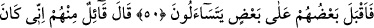
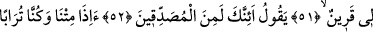
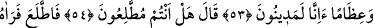
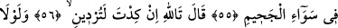
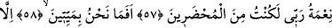
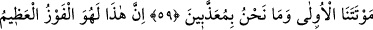
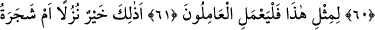
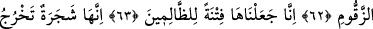
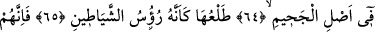
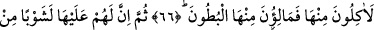
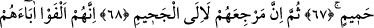
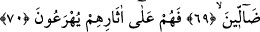
BÖYLESİ BİR KURTULUŞ İÇİN ÇALIŞIN!
50. İşte o zaman, birbirlerine dönerek (dünyadaki hallerini) soracaklar.
51. İçlerinden biri: «Benim, bir arkadaşım vardı» der.
52, 53. Derdi ki: Sen de (dirilmeye) inananlardan mısın? Biz ölüp kemik, sonra da
toprak haline geldiğimiz zaman (diriltilip) cezalanacak mıyız?
54, 55. (O zât, dünyâda geçmiş olan hâdiseyi bu şekilde anlattıktan sonra Allah
Teâlâ orada bulunanlara:) Siz işin gerçeğine vâkıf mısınız? dedi. İşte o zaman
konuşan baktı, arkadaşını cehennemin ortasında gördü.
56, 57. «Yemin ederim ki, sen az daha beni de helâk edecektin. Rabbimin nimeti
olmasaydı, şimdi ben de (cehenneme) getirilenlerden olurdum» dedi.
58, 59, 60, 61. Birinci ölümümüz hariç, bir daha biz ölmeyecek ve bir daha azap
görmeyecek değil miyiz? Şüphesiz bu, büyük kurtuluştur. Çalışanlar, böylesi bir
kurtuluş için çalışsın.
62, 63. Şimdi, ziyafet olarak, cennet ehli için anılan bu nimetler mi daha hayırlı,
yoksa zakkum ağacı mı? Biz onu (zakkumu) zâlimler için bir fitne (imtihan) kıldık.
64. Zira o, cehennemin dibinde bitip yetişen bir ağaçtır.
65. Tomurcukları sanki şeytanların başları gibidir.